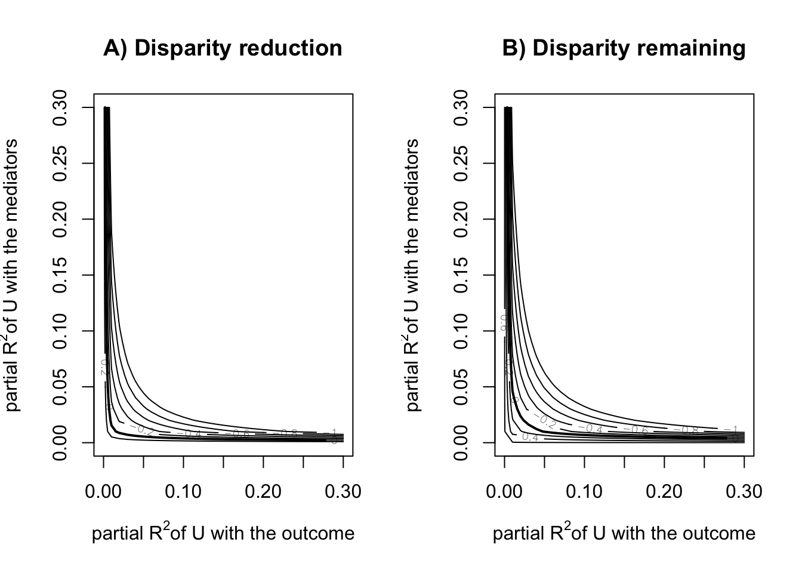

library(tidyverse)
library(cfdecomp)
library(gapclosing)
library(causal.decomp)
d <-
sMIDUS |>
transmute(Y = health |> as.numeric(), # outcome
T = edu |> as.numeric(), # treatment (continuous)
T2 = edu |> case_match(4:6 ~ 0, # treatment (binary)
7:9 ~ 1,
.default = NA) |> factor(),
X = racesex |> factor(levels = c("1", "4", "2", "3")), # note!
L1 = lowchildSES |> as.numeric(),
L2 = abuse |> as.numeric(),
C1 = age |> as.numeric(),
C2 = stroke |> as.numeric(),
C3 = T2DM |> as.numeric(),
C4 = heart |> as.numeric()) |>
mutate(across(L1:C4, \(.x){.x - mean(.x, na.rm = TRUE)})) |>
tibble()Causal Decomposition Analysis
前準備
continuuous mediator
cfdecomp
- Sudharsanan and Bijlsma (2021) の方法。mediatorの値をシミュレーションで複数生成するのが特徴
# cfd.mean
fit_cfdecomp <-
cfdecomp::cfd.mean(
formula.y = 'Y ~ X + T + X:T + L1 + L2 + C1 + C2 + C3 + C4',
formula.m = 'T ~ X + C1 + C2 + C3 + C4',
mediator = 'T',
group = 'X',
data = d |> data.frame(),
family.y = 'gaussian',
family.m = 'gaussian',
bs.size = 50,
mc.size = 10,
alpha = 0.05
)fit_cfdecomp$out_nc_m
1 4 2 3
1 7.731107 5.862364 7.096035 6.420827
2 7.710372 5.874706 7.072613 6.418001
3 7.729287 5.845363 7.091814 6.402172
4 7.695194 5.835458 7.113750 6.333537
5 7.709459 5.885473 7.089304 6.416817
6 7.711736 5.892668 7.065101 6.396395
7 7.718981 5.897499 7.053342 6.420924
8 7.737605 5.867735 7.074898 6.385157
9 7.743529 5.856016 7.053179 6.455156
10 7.692660 5.873005 7.048532 6.402734
11 7.700931 5.930579 7.073603 6.414454
12 7.709857 5.868390 7.057170 6.412065
13 7.660079 5.880086 7.090363 6.418543
14 7.710393 5.895310 7.079329 6.504930
15 7.713723 5.877004 7.073093 6.424146
16 7.700547 5.882369 7.077779 6.355311
17 7.704623 5.785021 7.080278 6.413351
18 7.667512 5.873864 7.103714 6.395201
19 7.697056 5.859268 7.129273 6.370715
20 7.717567 5.856811 7.066087 6.427390
21 7.718417 5.940837 7.056317 6.300270
22 7.714834 5.917167 7.077442 6.428109
23 7.687950 5.817567 7.091451 6.453549
24 7.714199 5.896253 7.067718 6.378753
25 7.716140 5.897198 7.072739 6.418608
26 7.717260 5.851545 7.106499 6.322000
27 7.728011 5.906222 7.093237 6.503905
28 7.721451 5.880151 7.080311 6.317035
29 7.704000 5.894500 7.082438 6.448184
30 7.734425 5.894040 7.100767 6.348688
31 7.655565 5.856737 7.071105 6.440338
32 7.712734 5.880527 7.077625 6.417011
33 7.688714 5.866698 7.039276 6.384534
34 7.722024 5.871955 7.064584 6.461704
35 7.712073 5.889282 7.075899 6.433744
36 7.672385 5.868874 7.111429 6.325871
37 7.701811 5.844496 7.083837 6.416046
38 7.725763 5.897123 7.072589 6.451187
39 7.702589 5.838610 7.095121 6.452029
40 7.723586 5.885005 7.036331 6.440488
41 7.727903 5.913520 7.039724 6.358536
42 7.690323 5.894879 7.092623 6.484075
43 7.741177 5.855015 7.063396 6.408379
44 7.731829 5.897012 7.115979 6.432608
45 7.768036 5.873023 7.057458 6.501102
46 7.708982 5.894930 7.072425 6.425957
47 7.670717 5.833270 7.072245 6.512370
48 7.699773 5.870835 7.109132 6.458289
49 7.705364 5.846849 7.098625 6.321133
50 7.713340 5.920546 7.072171 6.461629
$out_cf_m
1 4 2 3
1 7.708350 7.722585 7.723794 7.716957
2 7.712913 7.733073 7.729318 7.694003
3 7.736111 7.764328 7.740986 7.718688
4 7.705646 7.742209 7.734476 7.723840
5 7.704552 7.699852 7.709041 7.675510
6 7.713983 7.716303 7.718639 7.661669
7 7.708561 7.726610 7.715453 7.687802
8 7.730732 7.716861 7.732809 7.719617
9 7.735597 7.731789 7.732477 7.743175
10 7.693129 7.696694 7.722009 7.660469
11 7.690469 7.701887 7.684750 7.718891
12 7.714458 7.726172 7.723104 7.687651
13 7.688269 7.701443 7.691177 7.630499
14 7.705480 7.719773 7.720290 7.723078
15 7.699542 7.722704 7.723965 7.664636
16 7.705741 7.688666 7.705191 7.710428
17 7.700182 7.719994 7.706265 7.712396
18 7.674769 7.712930 7.695907 7.644272
19 7.707815 7.703147 7.714546 7.665647
20 7.707407 7.713980 7.734133 7.718156
21 7.700225 7.730233 7.715030 7.682727
22 7.716103 7.679059 7.675806 7.662687
23 7.691072 7.687812 7.695899 7.685424
24 7.714525 7.725910 7.743707 7.703314
25 7.717127 7.700888 7.714776 7.708556
26 7.717766 7.703144 7.709922 7.698403
27 7.743411 7.724071 7.737973 7.729505
28 7.718924 7.725136 7.724812 7.690157
29 7.707100 7.718769 7.714549 7.726620
30 7.728967 7.774284 7.761742 7.713455
31 7.655832 7.693236 7.700636 7.621821
32 7.721800 7.704404 7.711805 7.684146
33 7.717686 7.692474 7.710944 7.682718
34 7.711620 7.710729 7.743366 7.702984
35 7.711407 7.714970 7.718632 7.729888
36 7.675748 7.676697 7.689787 7.653327
37 7.704454 7.705490 7.717777 7.718488
38 7.726633 7.749533 7.732910 7.719652
39 7.696247 7.665819 7.710711 7.638711
40 7.733168 7.751703 7.742452 7.714189
41 7.712413 7.752997 7.748047 7.714767
42 7.699511 7.717476 7.703775 7.733894
43 7.736720 7.730948 7.751500 7.730856
44 7.724982 7.747891 7.743453 7.699396
45 7.769107 7.786505 7.785645 7.768933
46 7.710610 7.704217 7.720534 7.695336
47 7.663390 7.685722 7.697455 7.672185
48 7.688782 7.720037 7.701725 7.703989
49 7.708263 7.716284 7.701585 7.706781
50 7.717211 7.720879 7.739882 7.706129
$out_nc_quantile_m
1 4 2 3
2.5% 7.661751 5.821100 7.039377 6.317957
50% 7.711905 5.875855 7.076671 6.418272
97.5% 7.743000 5.928322 7.115478 6.504699
$out_cf_quantile_m
1 4 2 3
2.5% 7.665950 7.677228 7.685884 7.632347
50% 7.709585 7.717169 7.718636 7.703652
97.5% 7.741905 7.772044 7.759438 7.741087
$out_nc_y
1 4 2 3
1 7.621034 6.643970 7.322055 6.924275
2 7.633738 6.670871 7.317397 6.966114
3 7.613516 6.654114 7.339716 6.962072
4 7.566001 6.714272 7.344477 6.923949
5 7.582663 6.608517 7.342108 6.982281
6 7.624485 6.721935 7.344109 7.015607
7 7.615700 6.669074 7.317056 6.937811
8 7.590878 6.688900 7.297130 6.921428
9 7.616753 6.662662 7.347560 6.953588
10 7.598659 6.681245 7.315698 6.910735
11 7.641283 6.713114 7.232797 7.026384
12 7.632483 6.713234 7.337456 6.938076
13 7.597162 6.705088 7.369370 6.854373
14 7.545819 6.799541 7.324269 7.202672
15 7.604351 6.638954 7.359117 6.883424
16 7.637843 6.681505 7.313626 6.977353
17 7.573141 6.662691 7.302981 7.036249
18 7.627397 6.671481 7.302699 6.827321
19 7.632182 6.669407 7.339087 6.933783
20 7.667363 6.623564 7.285607 7.011452
21 7.546940 6.761133 7.320757 7.029462
22 7.619675 6.777865 7.317513 6.913706
23 7.597489 6.665322 7.329419 7.145886
24 7.589674 6.693107 7.305496 6.855245
25 7.628732 6.758465 7.335364 6.944407
26 7.695394 6.726443 7.322023 6.900229
27 7.617854 6.704219 7.353574 6.912435
28 7.584768 6.686726 7.324453 6.965376
29 7.585898 6.705098 7.328178 6.890520
30 7.595551 6.717583 7.330339 6.921962
31 7.556648 6.740562 7.341279 6.845864
32 7.651729 6.675705 7.288505 6.985546
33 7.598460 6.721346 7.300277 6.891533
34 7.611980 6.679736 7.314816 6.954367
35 7.569213 6.764731 7.269572 7.001851
36 7.569618 6.663174 7.341241 6.981874
37 7.526921 6.713062 7.341001 6.950535
38 7.585837 6.663266 7.304704 7.068719
39 7.601394 6.760833 7.289152 6.978806
40 7.596236 6.706722 7.316682 7.026793
41 7.576958 6.713345 7.280860 6.940524
42 7.554825 6.716216 7.326328 7.071289
43 7.588654 6.663031 7.300477 6.945659
44 7.588610 6.642729 7.319296 6.908200
45 7.592491 6.720409 7.354450 7.113536
46 7.584048 6.741128 7.314114 7.078543
47 7.579594 6.666064 7.341296 6.976665
48 7.611844 6.690621 7.320031 6.974167
49 7.563035 6.696348 7.331681 6.869391
50 7.617165 6.672579 7.364220 6.931810
$out_cf_y
1 4 2 3
1 7.615449 7.066474 7.491511 7.384101
2 7.634262 6.992428 7.451083 7.015862
3 7.615087 7.156897 7.481442 7.287263
4 7.568536 7.268018 7.497931 7.372646
5 7.581442 7.060231 7.499538 7.052493
6 7.624983 7.440954 7.514685 7.139768
7 7.612750 7.261943 7.487122 7.231810
8 7.589686 7.195857 7.439595 7.129562
9 7.614400 7.243737 7.490440 7.276700
10 7.598802 7.288846 7.498990 7.385749
11 7.638632 7.301550 7.391038 7.298745
12 7.633616 7.129459 7.484796 7.067990
13 7.603697 7.190594 7.493655 6.832317
14 7.544576 7.368068 7.511505 7.318609
15 7.601031 7.131709 7.509931 7.076647
16 7.639145 7.357993 7.478816 7.170166
17 7.571903 7.397812 7.487491 7.107398
18 7.628797 7.192846 7.462779 7.117366
19 7.634705 7.111518 7.434190 7.399737
20 7.665212 7.268880 7.436029 7.225628
21 7.543768 7.306616 7.491977 7.237363
22 7.619980 7.368201 7.448897 7.113867
23 7.598233 7.351131 7.486429 7.424914
24 7.589759 7.274429 7.483346 7.033521
25 7.628955 7.269230 7.478446 7.145831
26 7.695517 7.276190 7.449751 7.042623
27 7.621503 7.297217 7.503546 7.152087
28 7.584135 7.221680 7.471701 7.426957
29 7.586723 7.283837 7.482231 7.208557
30 7.594070 7.094408 7.471540 7.275556
31 7.556706 7.495113 7.467534 7.165933
32 7.654033 7.215387 7.401768 7.310744
33 7.605717 7.257055 7.481343 7.428953
34 7.609447 7.211330 7.470230 7.316104
35 7.569079 7.475382 7.437128 7.377035
36 7.570174 7.191352 7.458905 7.313817
37 7.527441 7.289334 7.488176 7.142439
38 7.586023 7.232231 7.453361 7.230344
39 7.600187 7.270059 7.426482 7.222822
40 7.598377 7.151726 7.466375 7.256411
41 7.573373 7.307811 7.415343 7.270441
42 7.557685 7.300850 7.479898 7.305634
43 7.587329 7.072684 7.488139 7.161201
44 7.586934 7.324096 7.484599 7.048006
45 7.592793 7.302028 7.525389 7.534480
46 7.584543 7.191902 7.473777 7.384518
47 7.577544 7.254755 7.484254 7.325500
48 7.609535 7.086800 7.457066 7.277445
49 7.563548 7.304756 7.486797 7.128809
50 7.618269 7.276524 7.488949 7.242437
$out_nc_quantile_y
1 4 2 3
2.5% 7.546071 6.627026 7.272112 6.847778
50% 7.597325 6.691864 7.322039 6.952062
97.5% 7.663845 6.774910 7.363072 7.138607
$out_cf_quantile_y
1 4 2 3
2.5% 7.543950 7.061636 7.404822 7.019835
50% 7.598589 7.268449 7.481392 7.234587
97.5% 7.662697 7.467635 7.513970 7.428504
$mediation
4 2 3
0.6137552 0.5564163 0.4214775
$mediation_quantile
4 2 3
2.5% 0.4293937 0.3284408 0.08406186
97.5% 0.8662784 0.7838182 0.75684386
$mc_conv_info_m
[,1] [,2] [,3] [,4]
[1,] 7.714687 5.882658 7.101293 6.434694
[2,] 7.735273 5.860228 7.109142 6.425760
[3,] 7.729892 5.869614 7.102033 6.427961
[4,] 7.728124 5.867163 7.105497 6.422210
[5,] 7.725496 5.868032 7.099355 6.435313
[6,] 7.731321 5.872739 7.096583 6.433744
[7,] 7.721929 5.866966 7.094652 6.436417
[8,] 7.724117 5.860777 7.098441 6.437772
[9,] 7.727046 5.865477 7.096471 6.429285
[10,] 7.731107 5.862364 7.096035 6.420827
$mc_conv_info_y
[,1] [,2] [,3] [,4]
[1,] 7.617004 6.648579 7.323474 6.929194
[2,] 7.622056 6.643485 7.325593 6.926025
[3,] 7.620736 6.645616 7.323674 6.926806
[4,] 7.620302 6.645060 7.324609 6.924765
[5,] 7.619657 6.645257 7.322951 6.929414
[6,] 7.621086 6.646326 7.322203 6.928857
[7,] 7.618781 6.645015 7.321681 6.929806
[8,] 7.619318 6.643609 7.322704 6.930286
[9,] 7.620037 6.644677 7.322172 6.927276
[10,] 7.621034 6.643970 7.322055 6.924275mean(fit_cfdecomp$out_nc_y[,2] - fit_cfdecomp$out_nc_y[,1])[1] -0.9041596mean(fit_cfdecomp$out_cf_y[,2] - fit_cfdecomp$out_nc_y[,1])[1] -0.3525951mean(fit_cfdecomp$out_nc_y[,2] - fit_cfdecomp$out_cf_y[,2])[1] -0.5515645fit_cfdecomp$mediation 4 2 3
0.6137552 0.5564163 0.4214775 mean(fit_cfdecomp$out_nc_y[,3] - fit_cfdecomp$out_nc_y[,1])[1] -0.2785655mean(fit_cfdecomp$out_cf_y[,3] - fit_cfdecomp$out_nc_y[,1])[1] -0.1272748mean(fit_cfdecomp$out_nc_y[,3] - fit_cfdecomp$out_cf_y[,3])[1] -0.1512907mean(fit_cfdecomp$out_nc_y[,4] - fit_cfdecomp$out_nc_y[,1])[1] -0.6369167mean(fit_cfdecomp$out_cf_y[,4] - fit_cfdecomp$out_nc_y[,1])[1] -0.3722955mean(fit_cfdecomp$out_nc_y[,4] - fit_cfdecomp$out_cf_y[,4])[1] -0.2646212causal.decomp
- Park, Kang, and Lee (2023) の方法。
# smi
fit.y <- lm(Y ~ X + T + X:T + L1 + L2 + C1 + C2 + C3 + C4, data = d)
fit.m <- lm(T ~ X + C1 + C2 + C3 + C4, data = d)
fit_smi <- smi(fit.y = fit.y,
fit.m = fit.m,
treat = "X",
sims = 100,
conf.level = .95,
conditional = TRUE,
covariates = 1,
# baseline covariatesを調整できる
#covariates = c("C1", "C2", "C3", "C4"),
seed = 227,
)
fit_smi
Results:
estimate 95% CI Lower 95% CI Upper
Initial Disparity (1 vs 4) -0.8993401 -0.9925190 -0.79813505
Disparity Remaining (1 vs 4) -0.3384430 -0.4880863 -0.14795873
Disparity Reduction (1 vs 4) -0.5608971 -0.7346168 -0.42650061
Initial Disparity (1 vs 2) -0.2749659 -0.3378874 -0.19366549
Disparity Remaining (1 vs 2) -0.1213246 -0.2203441 -0.05458727
Disparity Reduction (1 vs 2) -0.1536412 -0.1896213 -0.10521328
Initial Disparity (1 vs 3) -0.6137425 -0.7326095 -0.47793913
Disparity Remaining (1 vs 3) -0.3500123 -0.5151994 -0.08733348
Disparity Reduction (1 vs 3) -0.2637302 -0.4880614 -0.11574038- sensitivity analysis(Park et al. 2023)
sensRes <- sensitivity(boot.res = fit_smi, fit.m = fit.m, fit.y = fit.y,
mediator = "T",
covariates = c("C1", "C2", "C3", "C4"),
treat = "X",
sel.lev.treat = "4",
max.rsq = 0.3)
plot(sensRes)
binary mediator
cfdecomp
# cfd.mean
set.seed(123456)
fit_cfdecomp_b <-
cfd.mean(
formula.y = 'Y ~ X + T2 + X:T2 + L1 + L2 + C1 + C2 + C3 + C4',
formula.m = 'T2 ~ X + C1 + C2 + C3 + C4',
mediator = 'T2',
group = 'X',
data = d |> mutate(T2 = as.numeric(T2) - 1) |> data.frame(),
family.y = 'gaussian',
family.m = 'binomial',
bs.size = 50,
mc.size = 10,
alpha = 0.05
)
mean(fit_cfdecomp_b$out_nc_y[,"4"] - fit_cfdecomp_b$out_nc_y[,"1"])[1] -0.8981701mean(fit_cfdecomp_b$out_cf_y[,"4"] - fit_cfdecomp_b$out_nc_y[,"1"])[1] -0.5546351mean(fit_cfdecomp_b$out_nc_y[,"4"] - fit_cfdecomp_b$out_cf_y[,"4"])[1] -0.343535fit_cfdecomp_b$mediation 4 2 3
0.3828971 0.1298177 0.2061071 mean(fit_cfdecomp_b$out_nc_y[,"2"] - fit_cfdecomp_b$out_nc_y[,"1"])[1] -0.2774845mean(fit_cfdecomp_b$out_cf_y[,"2"] - fit_cfdecomp_b$out_nc_y[,"1"])[1] -0.2419289mean(fit_cfdecomp_b$out_nc_y[,"2"] - fit_cfdecomp_b$out_cf_y[,"2"])[1] -0.03555558mean(fit_cfdecomp_b$out_nc_y[,"3"] - fit_cfdecomp_b$out_nc_y[,"1"])[1] -0.5849521mean(fit_cfdecomp_b$out_cf_y[,"3"] - fit_cfdecomp_b$out_nc_y[,"1"])[1] -0.4655888mean(fit_cfdecomp_b$out_nc_y[,"3"] - fit_cfdecomp_b$out_cf_y[,"3"])[1] -0.1193632causal.decomp
# smi
fit.y <- lm(Y ~ X + T2 + X:T2 + L1 + L2 + C1 + C2 + C3 + C4, data = d)
fit.m <- glm(T2 ~ X + C1 + C2 + C3 + C4, data = d, family = binomial(link = "logit"))
fit_smi_b <- smi(fit.y = fit.y,
fit.m = fit.m,
treat = "X",
sims = 100,
conf.level = .95,
conditional = TRUE,
# covariates = 1,
covariates = c("C1", "C2", "C3", "C4"),
seed = 123456)
fit_smi_b
Results:
estimate 95% CI Lower 95% CI Upper
Initial Disparity (1 vs 4) -0.95667843 -1.02938841 -0.88175003
Disparity Remaining (1 vs 4) -0.61262729 -0.77966809 -0.46844380
Disparity Reduction (1 vs 4) -0.34405113 -0.49650368 -0.21581205
Initial Disparity (1 vs 2) -0.31394841 -0.38058533 -0.26000373
Disparity Remaining (1 vs 2) -0.27995004 -0.34624791 -0.22226331
Disparity Reduction (1 vs 2) -0.03399837 -0.05003528 -0.02022012
Initial Disparity (1 vs 3) -0.59968604 -0.69525994 -0.49987857
Disparity Remaining (1 vs 3) -0.48148718 -0.61387973 -0.32105036
Disparity Reduction (1 vs 3) -0.11819886 -0.24676548 -0.03361808sensRes <- sensitivity(boot.res = fit_smi_b,
fit.m = fit.m,
fit.y = fit.y,
mediator = "T2",
covariates = c("C1", "C2", "C3", "C4"),
treat = "X",
sel.lev.treat = "4",
max.rsq = 0.3)
plot(sensRes)
gapclosing
- Lundberg (2022)
# gapclosing - regression
# stochastic intervention
# treatmentの割り当て確率の予測値を算出
fit_glm <- glm(T2 ~ X + C1 + C2 + C3, data = d, family = binomial(link = "logit"))
# 全員のtreatmentが1だった時の予測値
assing_prob <- predict(fit_glm, newdata = d |> mutate(X = "1"), type = "response")
# 予測値をもとにrandom draw
draw <- rbinom(n = nrow(d), size = 1, prob = assing_prob)
fit_gapclosing <-
gapclosing(
data = d |> mutate(T2 = as.numeric(T2) - 1),
outcome_formula = Y ~ T2 * X + C1 + C2 + C3 + C4 + L1 + L2,
treatment_name = "T2",
category_name = "X",
counterfactual_assignments = draw # random draw
)
fit_gapclosing
Factual mean outcomes:
# A tibble: 4 × 2
X estimate
<fct> <dbl>
1 1 7.60
2 4 6.70
3 2 7.32
4 3 6.98
Counterfactual mean outcomes (post-intervention means):
# A tibble: 4 × 2
X estimate
<fct> <dbl>
1 1 7.60
2 4 7.03
3 2 7.36
4 3 7.11
Factual disparities:
# A tibble: 12 × 2
X estimate
<chr> <dbl>
1 1 - 4 0.899
2 1 - 2 0.275
3 1 - 3 0.614
4 4 - 1 -0.899
5 4 - 2 -0.624
6 4 - 3 -0.286
7 2 - 1 -0.275
8 2 - 4 0.624
9 2 - 3 0.339
10 3 - 1 -0.614
11 3 - 4 0.286
12 3 - 2 -0.339
Counterfactual disparities (gap-closing estimands):
# A tibble: 12 × 2
X estimate
<chr> <dbl>
1 1 - 4 0.566
2 1 - 2 0.241
3 1 - 3 0.483
4 4 - 1 -0.566
5 4 - 2 -0.325
6 4 - 3 -0.0830
7 2 - 1 -0.241
8 2 - 4 0.325
9 2 - 3 0.242
10 3 - 1 -0.483
11 3 - 4 0.0830
12 3 - 2 -0.242
Additive gap closed: Counterfactual - Factual
# A tibble: 12 × 2
X estimate
<chr> <dbl>
1 1 - 4 0.334
2 1 - 2 0.0339
3 1 - 3 0.131
4 4 - 1 -0.334
5 4 - 2 -0.300
6 4 - 3 -0.203
7 2 - 1 -0.0339
8 2 - 4 0.300
9 2 - 3 0.0972
10 3 - 1 -0.131
11 3 - 4 0.203
12 3 - 2 -0.0972
Proportional gap closed: (Counterfactual - Factual) / Factual
# A tibble: 12 × 2
X estimate
<chr> <dbl>
1 1 - 4 0.371
2 1 - 2 0.123
3 1 - 3 0.214
4 4 - 1 0.371
5 4 - 2 0.480
6 4 - 3 0.710
7 2 - 1 0.123
8 2 - 4 0.480
9 2 - 3 0.287
10 3 - 1 0.214
11 3 - 4 0.710
12 3 - 2 0.287disparityplot(fit_gapclosing, category_A = "1", category_B = "4")
disparityplot(fit_gapclosing, category_A = "1", category_B = "2")
disparityplot(fit_gapclosing, category_A = "1", category_B = "3")
- 機械学習をつかったdoubly robustな方法も使える
# gapclosing - ranger, doubly robust
fit_gapclosing_ranger <-
gapclosing(
data = d |> mutate(T2 = as.numeric(T2) - 1),
outcome_formula = Y ~ T2 + X + C1 + C2 + C3 + C4 + L1 + L2,
treatment_formula = T2 ~ X + C1 + C2 + C3 + C4 + L1 + L2,
treatment_name = "T2",
treatment_algorithm = "ranger",
outcome_algorithm = "ranger",
category_name = "X",
counterfactual_assignments = rbinom(n = nrow(d), size = 1, prob = assing_prob)
)
fit_gapclosing
Factual mean outcomes:
# A tibble: 4 × 2
X estimate
<fct> <dbl>
1 1 7.60
2 4 6.70
3 2 7.32
4 3 6.98
Counterfactual mean outcomes (post-intervention means):
# A tibble: 4 × 2
X estimate
<fct> <dbl>
1 1 7.60
2 4 7.03
3 2 7.36
4 3 7.11
Factual disparities:
# A tibble: 12 × 2
X estimate
<chr> <dbl>
1 1 - 4 0.899
2 1 - 2 0.275
3 1 - 3 0.614
4 4 - 1 -0.899
5 4 - 2 -0.624
6 4 - 3 -0.286
7 2 - 1 -0.275
8 2 - 4 0.624
9 2 - 3 0.339
10 3 - 1 -0.614
11 3 - 4 0.286
12 3 - 2 -0.339
Counterfactual disparities (gap-closing estimands):
# A tibble: 12 × 2
X estimate
<chr> <dbl>
1 1 - 4 0.566
2 1 - 2 0.241
3 1 - 3 0.483
4 4 - 1 -0.566
5 4 - 2 -0.325
6 4 - 3 -0.0830
7 2 - 1 -0.241
8 2 - 4 0.325
9 2 - 3 0.242
10 3 - 1 -0.483
11 3 - 4 0.0830
12 3 - 2 -0.242
Additive gap closed: Counterfactual - Factual
# A tibble: 12 × 2
X estimate
<chr> <dbl>
1 1 - 4 0.334
2 1 - 2 0.0339
3 1 - 3 0.131
4 4 - 1 -0.334
5 4 - 2 -0.300
6 4 - 3 -0.203
7 2 - 1 -0.0339
8 2 - 4 0.300
9 2 - 3 0.0972
10 3 - 1 -0.131
11 3 - 4 0.203
12 3 - 2 -0.0972
Proportional gap closed: (Counterfactual - Factual) / Factual
# A tibble: 12 × 2
X estimate
<chr> <dbl>
1 1 - 4 0.371
2 1 - 2 0.123
3 1 - 3 0.214
4 4 - 1 0.371
5 4 - 2 0.480
6 4 - 3 0.710
7 2 - 1 0.123
8 2 - 4 0.480
9 2 - 3 0.287
10 3 - 1 0.214
11 3 - 4 0.710
12 3 - 2 0.287disparityplot(fit_gapclosing_ranger, category_A = "1", category_B = "4")
disparityplot(fit_gapclosing_ranger, category_A = "1", category_B = "2")
disparityplot(fit_gapclosing_ranger, category_A = "1", category_B = "3")
References
Lundberg, Ian. 2022. “The Gap-Closing Estimand: A Causal Approach to Study Interventions That Close Disparities Across Social Categories.” Sociological Methods & Research, January. https://doi.org/10.1177/00491241211055769.
Park, Soojin, Suyeon Kang, and Chioun Lee. 2023. “Choosing an Optimal Method for Causal Decomposition Analysis with Continuous Outcomes: A Review and Simulation Study.” Sociological Methodology, July, 00811750231183711. https://doi.org/10.1177/00811750231183711.
Park, Soojin, Suyeon Kang, Chioun Lee, and Shujie Ma. 2023. “Sensitivity Analysis for Causal Decomposition Analysis: Assessing Robustness Toward Omitted Variable Bias.” Journal of Causal Inference 11 (1): 20220031. https://doi.org/10.1515/jci-2022-0031.
Sudharsanan, Nikkil, and Maarten J Bijlsma. 2021. “Educational Note: Causal Decomposition of Population Health Differences Using Monte Carlo Integration and the G-Formula.” International Journal of Epidemiology 50 (6): 2098–2107. https://doi.org/10.1093/ije/dyab090.